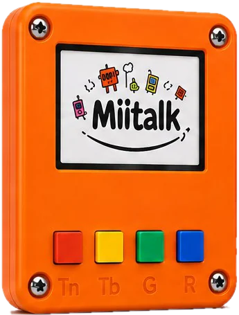
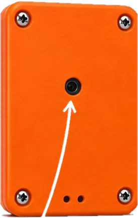
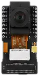
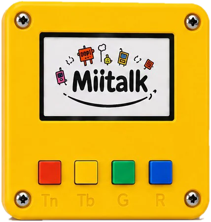
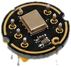

Vision Kit



A little camera
Helps children collect pictures and try out their own sorting ideas.
Open the box, start an adventure
Colourful tools, friendly prompts and lots of room for a child’s next big idea.



Helps children collect pictures and try out their own sorting ideas.


Invites children to clap, whistle, talk and explore the sounds around them.
A tiny adventure, step by step
Children learn by showing, trying and noticing what changes.
Hold up an object or make a sound for the kit to explore.
Give each kind of example its own friendly button.
The kit looks for the little details that belong together.
Offer something new and see the kit make its best match.
More than a clever little kit
Miltalk keeps the interesting part of AI out in the open: trying ideas, noticing patterns and asking better questions.
Pictures and sounds become examples children can collect, compare and talk about together.
Big buttons and playful prompts leave room for pressing, testing, changing a mind and trying again.
Each guess is a new chance to wonder: “What did it notice?” and “What should we try next?”
Choose a first adventure
Start with one of these friendly prompts, then follow the questions that pop up along the way.
Vision Kit
Collect a few bright-coloured snacks or objects and a few darker ones. Can the kit spot the difference?
Colour, shape and light.
Which examples helped the kit most?
Questions are part of the fun
Tap a card to uncover a little more about learning, experimenting and bringing Miltalk to a group.
Miltalk is a hands-on kit that helps children explore how smart technology learns through pictures, sounds and playful experiments.
Start with one of the first missions above. Gather a few examples, make a guess, then change one thing at a time to see what the kit notices.
No. The experience is guided with a few buttons, a screen and lots of room to experiment.
That is a brilliant reason to look more closely. Try adding a few different examples or changing the light, distance or sound, then compare what happens.
Yes. We run hands-on sessions with schools and community organisations. Tell us about your group on our contact page.